O AndesTrail é um projeto dedicado a valorizar e divulgar a riqueza cultural dos países latino-americanos. Aqui, você poderá explorar tradições, trajes típicos, festas regionais, culinárias autênticas e muito mais sobre as diversas nações que compõem a América Latina.
Saber mais!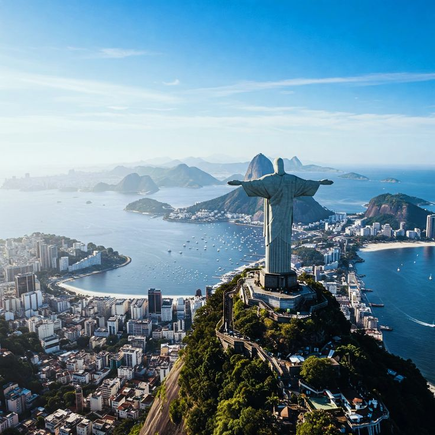
Floresta Amazônica, samba e diversidade cultural vibrante.
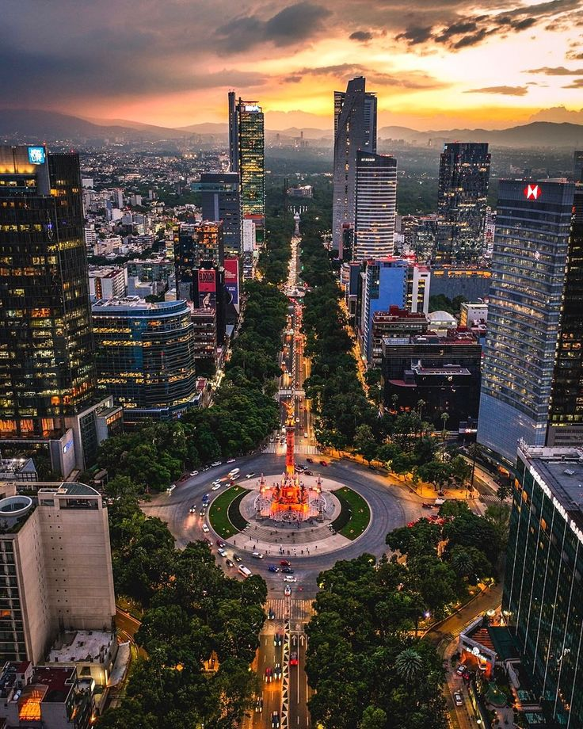
Riqueza indígena, Dia dos Mortos e culinária picante.
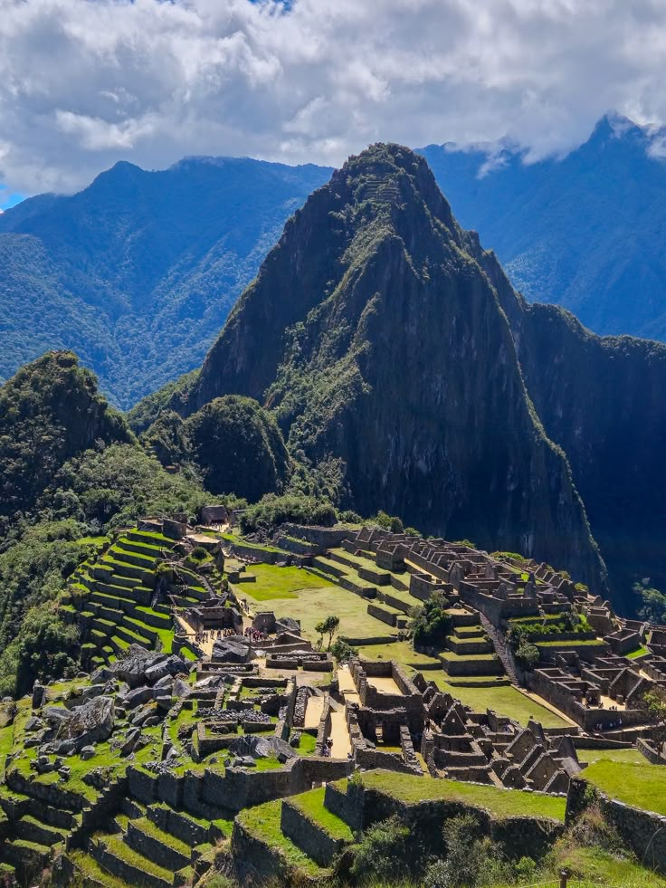
Ruínas incas, Machu Picchu e tradições andinas.
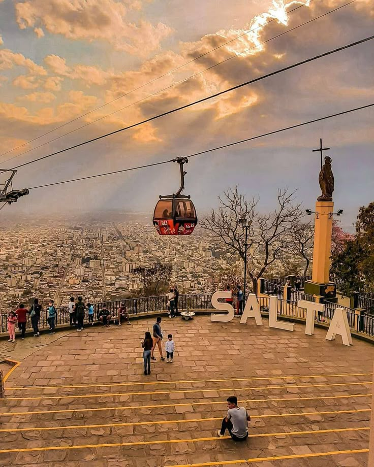
Tango, pampas, mate e a vibrante Buenos Aires.
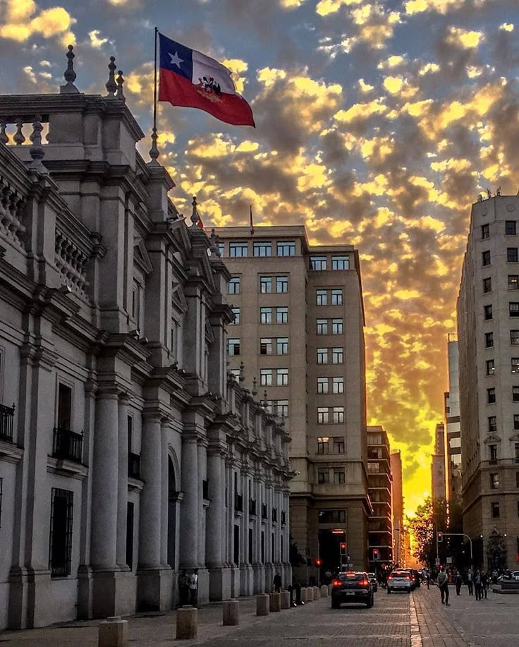
Deserto do Atacama, vinhos e paisagens patagônicas.
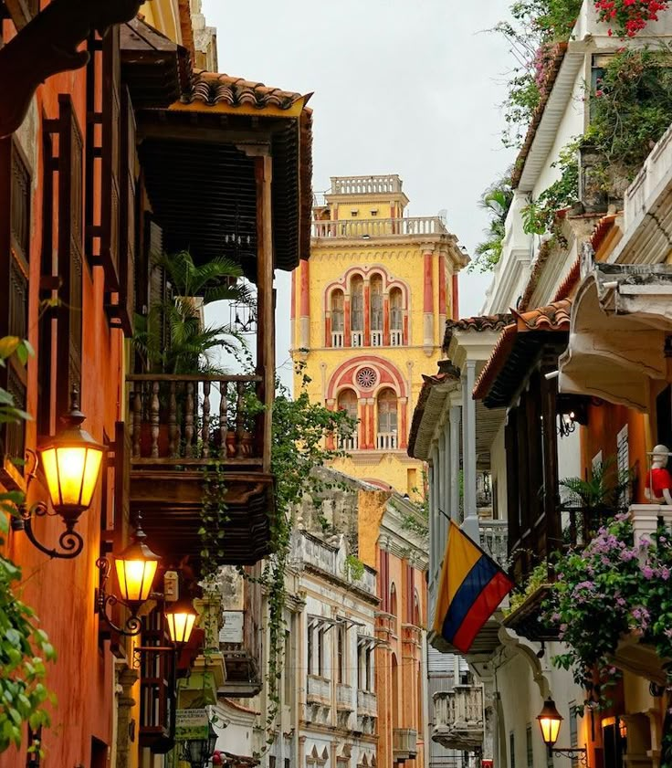
Realismo mágico, cafés renomados e festa o ano todo.
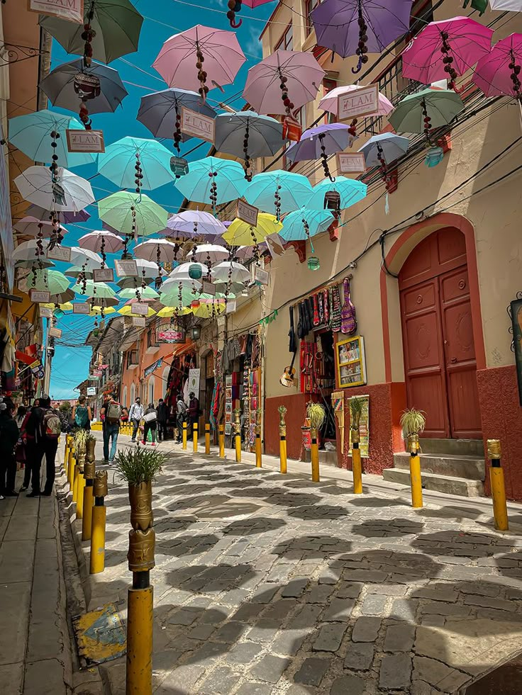
Cultura ancestral, Salar de Uyuni e trajes coloridos.
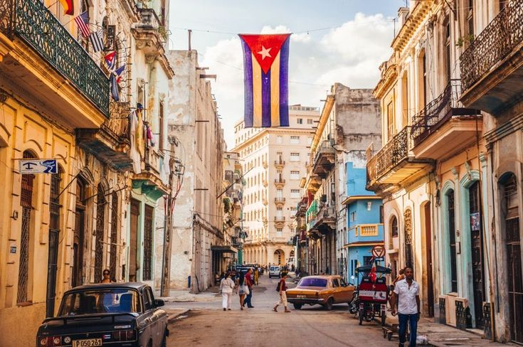
Carros antigos, música contagiante e história revolucionária.
A cultura da América Latina é marcada por uma vibrante mistura de tradições indígenas, africanas e europeias. Cada país expressa sua identidade por meio de festas, vestimentas, músicas, danças e culinárias únicas.
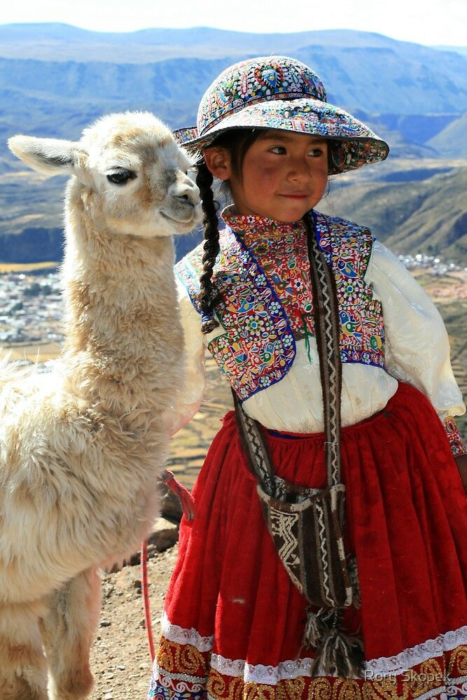
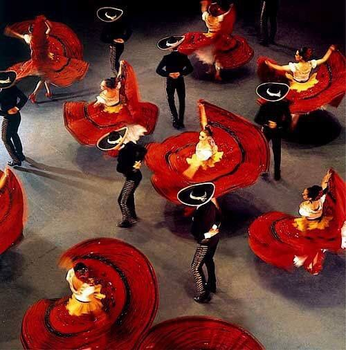

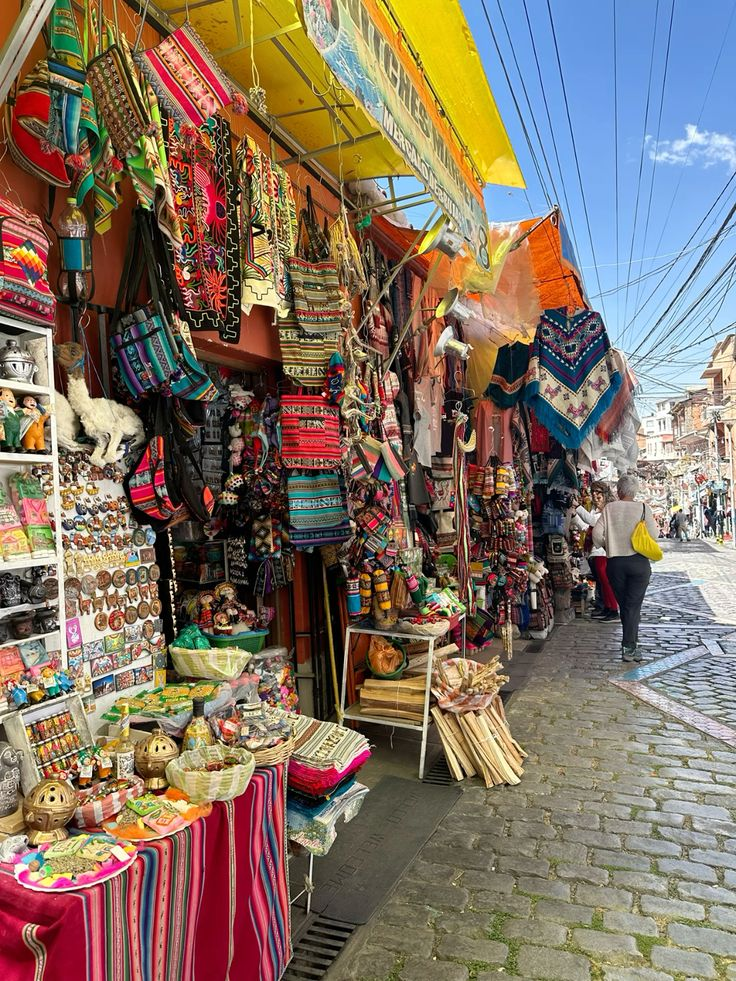
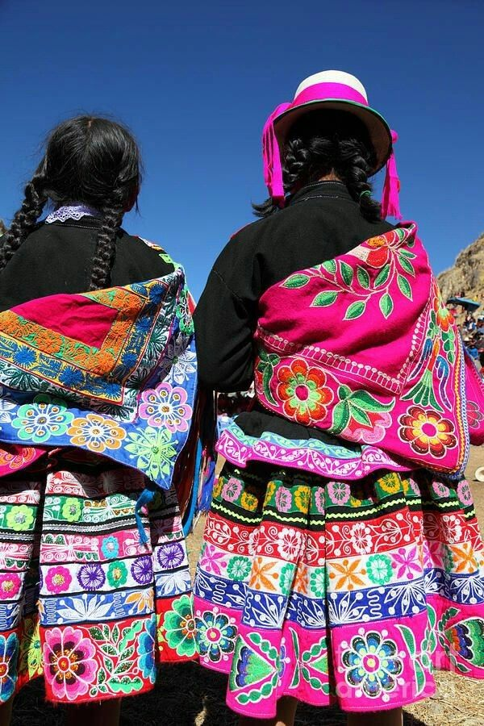
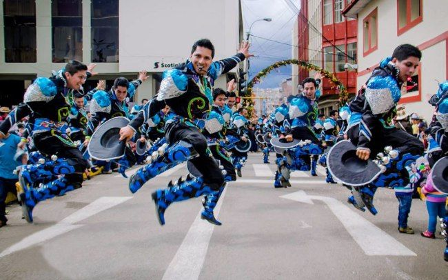
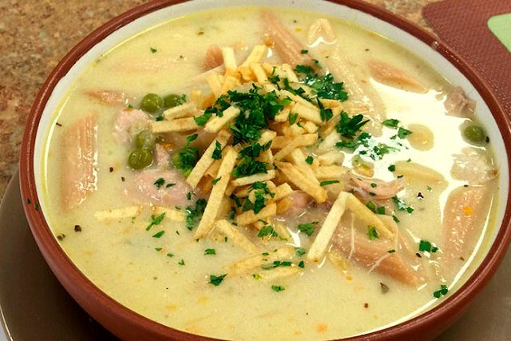
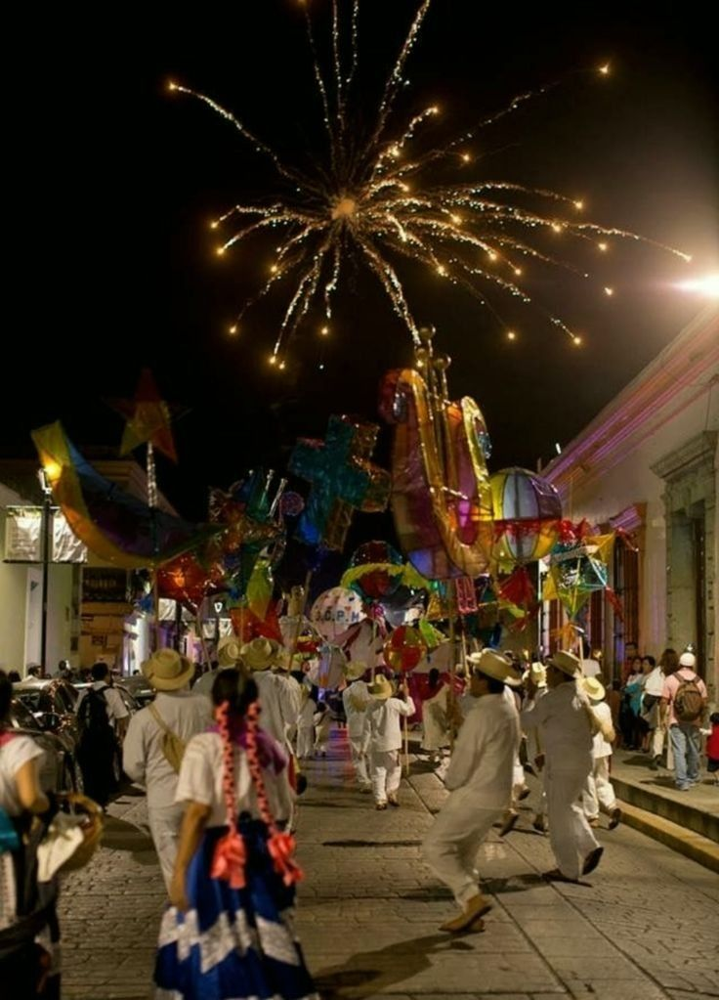
O AndesTrail nasceu do desejo de valorizar a identidade latino-americana e despertar o interesse pelas riquezas culturais da nossa região. Nosso site é fruto de pesquisa, dedicação e amor pela diversidade.
Estudante de Ciência da Computação na SPTech, apaixonada por cultura e tecnologia, acredita que o conhecimento pode transformar o turismo e fortalecer a identidade dos povos latino-americanos.